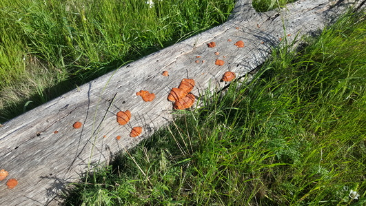
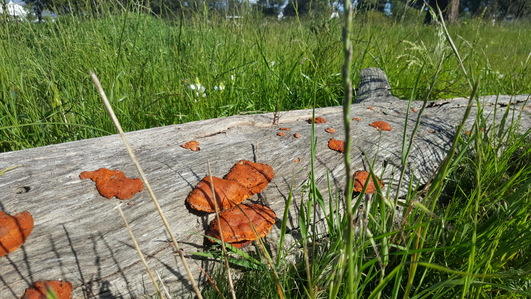

Far removed from where I found my first Pycnoporus sanguineus I came across this log showing much heavier fruiting. Again it would appear that the carpenter bees play a role in distributing fungal spores


Far removed from where I found my first Pycnoporus sanguineus I came across this log showing much heavier fruiting. Again it would appear that the carpenter bees play a role in distributing fungal spores
The Disa flowers have open since I was last here.
And a few patches of Briza grass.
By far the most interesting find for the day was theses paw prints. It had rained heavily the previous day so I know these were fresh.
I found some more Cladonia lichen but this time growing directly on soil instead of on wood.

The same massive earthstar that I found during the previous visit has seen better days.
The only other interesting find for the day was this soon to be mother chameleon.
A short walk furter I was lucky enough to spot another one.